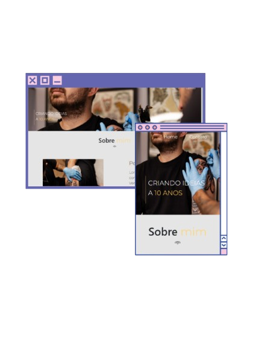
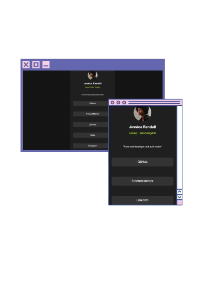
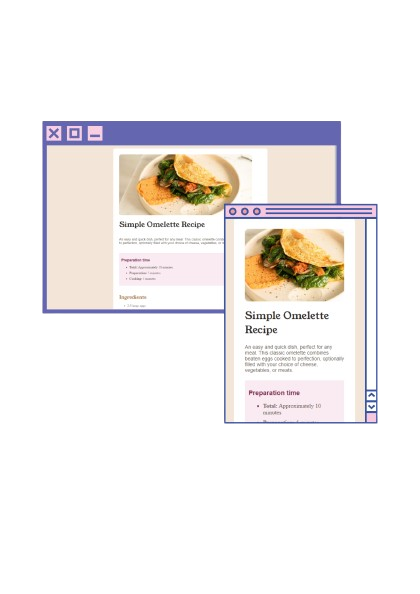

Saiba mais sobre o que faço
Apresento minha abordagem para transformar ideias em soluções práticas e funcionais. Cada projeto é meticulosamente desenvolvido para garantir eficiência, sempre alinhado às necessidades reais e ao contexto do usuário.
Desenvolvo interfaces que combinam acessibilidade, usabilidade e estética. Meu foco está em criar experiências que proporcionem uma navegação fluida e agradável, respeitando as melhores práticas de design e a necessidade dos usuários.
Meu código é escrito com clareza e otimização em mente. Busco implementar soluções que sejam não apenas eficientes, mas também fáceis de entender e manter, visando sempre resultados concretos e de alta performance.
Site responsivo criado para um estúdio de tatuagem, com foco na experiência do usuário e estética. O layout realça os trabalhos do tatuador por meio de uma galeria interativa, além de apresentar os estilos artísticos, refletindo a identidade única do estúdio e do profissional.
Acesse aqui Plataforma desenvolvida para organizar e facilitar o acesso a links úteis. A página principal é segmentada por categorias claras, com descrições objetivas que permitem ao usuário localizar rapidamente o que busca. O design é responsivo e intuitivo, oferecendo uma navegação fluida em diferentes dispositivos.
Acesse aqui Design simples e organizado para uma página de receitas, com ingredientes e instruções apresentados de forma clara e segmentada, facilitando a leitura. Inclui imagem do prato finalizado e sugestões de personalização. O layout responsivo proporciona uma ótima experiência em qualquer dispositivo.
Acesse aqui 